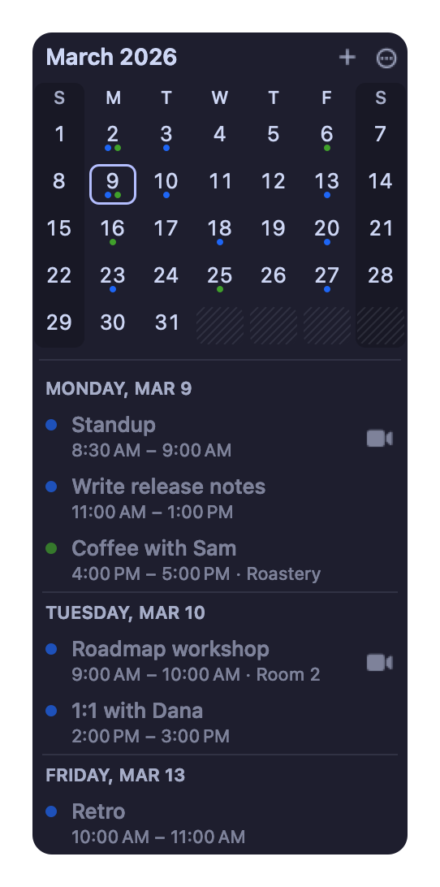
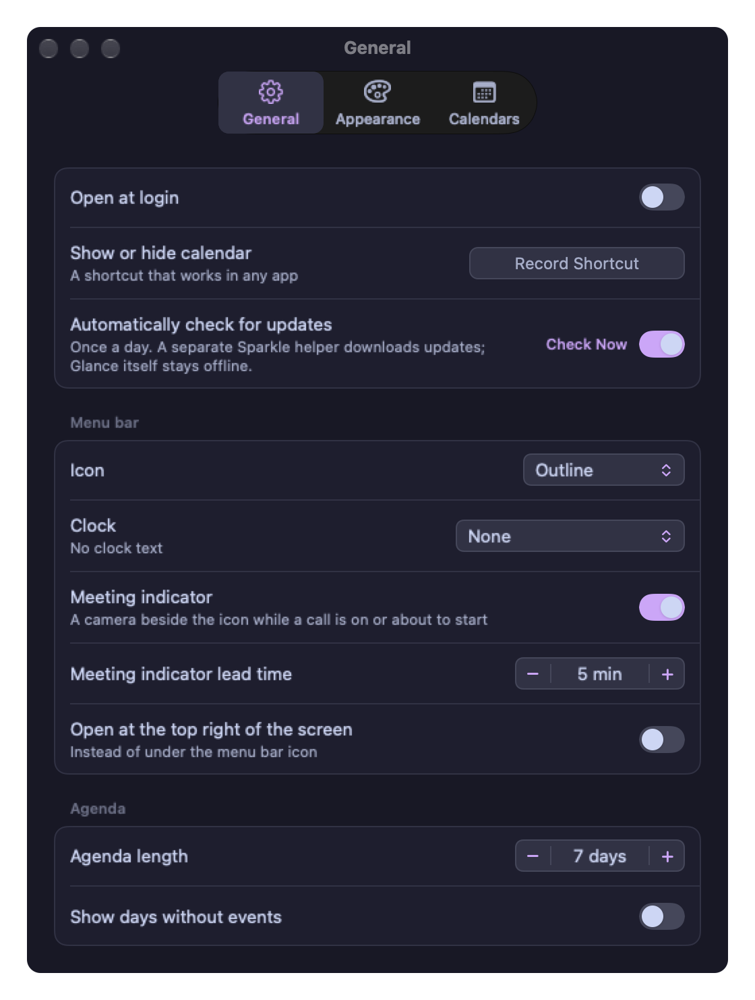
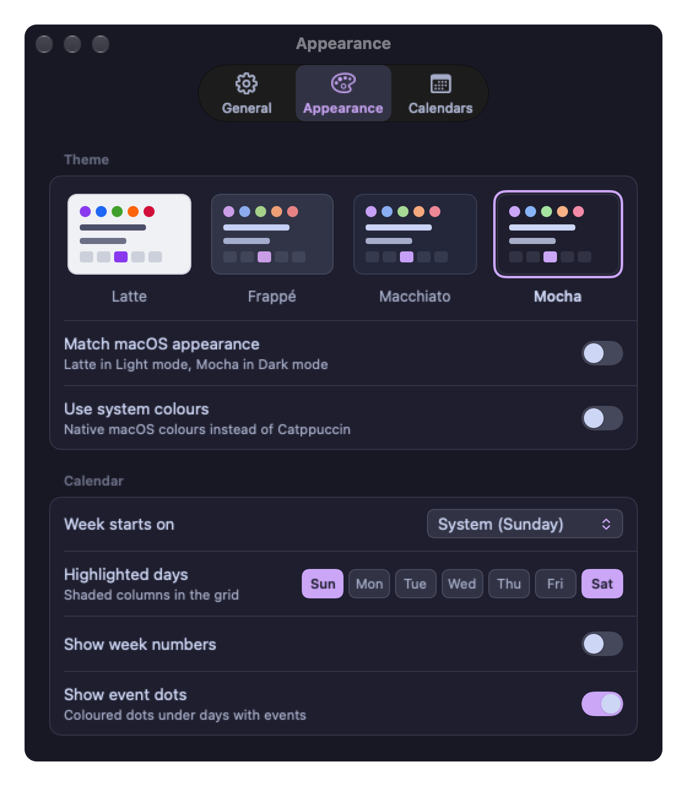
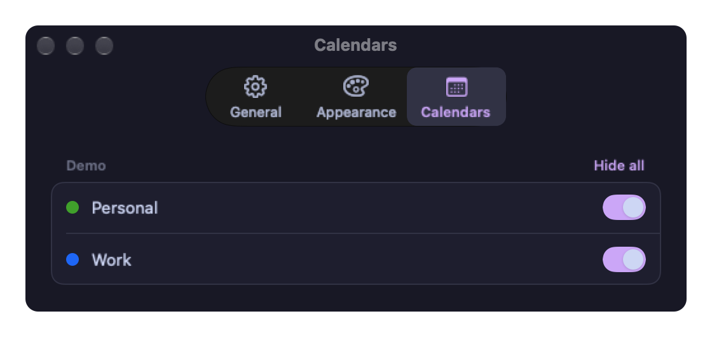
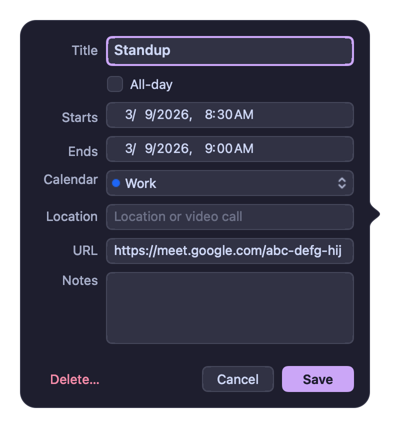

A menu bar date you can read at a glance
Drawn as a template image and placed in real menu bar coordinates, so the box is centred on macOS 27's 30 pt bar instead of sitting a point high. Outline or filled.
Glance puts today's date in your menu bar. Click it and a month grid and agenda drop down underneath — your events, your meeting links, in four Catppuccin flavours.
Requires macOS 27 or later. Signed with a Developer ID, notarized by Apple, and it updates itself.

Drawn as a template image and placed in real menu bar coordinates, so the box is centred on macOS 27's 30 pt bar instead of sitting a point high. Outline or filled.
Zoom, Meet, Teams and Webex links are found in an event's location, URL or notes. The agenda grows a join button that opens the native app when you have it, and a camera appears in the menu bar while a call is current or about to start. ⌘J joins.
Latte, Frappé, Macchiato and Mocha from the Catppuccin palette, a Catppuccin auto mode that follows light and dark, or plain macOS colours.
Create, change and delete. Deleting a repeating event asks whether you mean this one or all future ones. Declined events stay hidden.
Arrows move by month and year, ⇧+arrows or h j k l move the selection, t jumps to today, return makes an event. Or two-finger swipe the grid.
Checks once a day. When one is waiting the menu item says so and the icon gets a dot, rather than throwing a window in front of your work.
These are drawn by the app itself, not captured from a screen — same code path as the window you'd see. Switch the flavour up top and they change with it.




Glance reads your calendars through macOS and nothing else. It's sandboxed without the outgoing-connections entitlement, so there is no code path that could send anything anywhere.
Updates are the one exception, and they don't run inside the app: Sparkle's separate Downloader service fetches the update feed and archive from this project's GitHub Releases, with system profiling off. It learns nothing about you.
script/check-offline.sh and the offline guard tests fail the
build if that ever changes.
<!-- the only one -->
<key>com.apple.security.personal-information.calendars</key>
<true/>
<!-- no com.apple.security.network.client -->No subscription, no upsell, no "pro". If it earns a place in your menu bar and you feel like it, you can buy me a coffee.
No. It reads the same calendars through EventKit, so anything you change in one shows up in the other. It's a faster way to look at the next week and join the next call, not a replacement for a full calendar.
It's built against the macOS 27 SDK and uses APIs from it, including the 30 pt menu bar geometry that the icon is positioned for. There's no build for earlier releases rather than a build that looks slightly wrong.
Yes. The app has no network entitlement, so it has no way to make a connection even if it wanted to. The build fails if that changes.
Nothing. The app is on GitHub Releases and updates come from there, so the domain is only this page.
Quit it, drag it to the Trash, and turn off Open at login first if you enabled it. There's no helper process left behind.